BESTIARIO
EL PROTAGONISTA
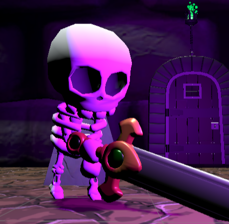
Parte Humana
Era un tipo normal con una vida tranquila. Cuando estalló la guerra entre Cara y Cruz, tuvo la suerte o la desgracia de encontrarse con una antigua reliquia: la moneda original. Ese descubrimiento cambió su destino, ahora es capaz de usar el poder de la moneda y hará lo que sea necesario.
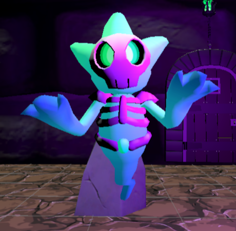
Parte Fantasma
Es el espíritu vinculado a la moneda original. Su misión es unirse a quien decida empuñar la moneda para restaurar el balance perdido. En esta forma, el protagonista canaliza su poder, accediendo a habilidades que van más allá del mundo físico.
LOS JEFES
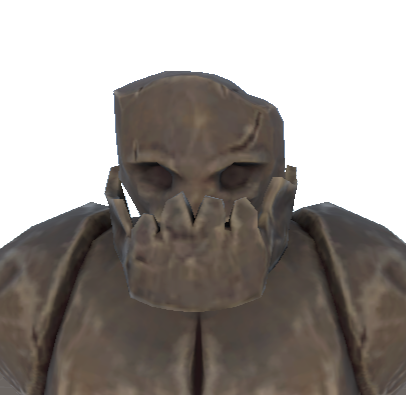
Cara
El Guardián del mundo material. Dios del orden y la materia. Representa la fuerza física. Sus ataques son directos y contundentes.
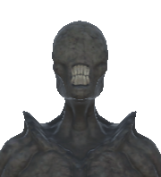
Cruz
La Soberana del mundo espectral. Entidad del caos espiritual y lo intangible. Es rápida e impredecible. Su naturaleza etérea hace que el enfrentamiento sea dinámico.
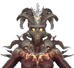
Canto
El azar absoluto. El dios perdido. Combina elementos de Cara y Cruz, alternando entre ataques físicos y espectrales.
ENEMIGOS COMUNES
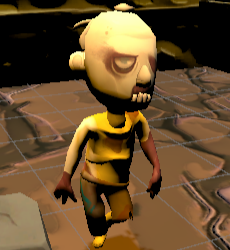
Zombie
Criaturas ligadas al mundo material. Se acercan al jugador de forma constante para atacar cuerpo a cuerpo.
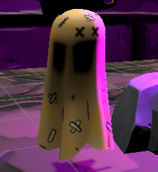
Fantasma
Entidades del plano espectral. Atacan a distancia y pueden desplazarse de forma impredecible.
RELICARIOS
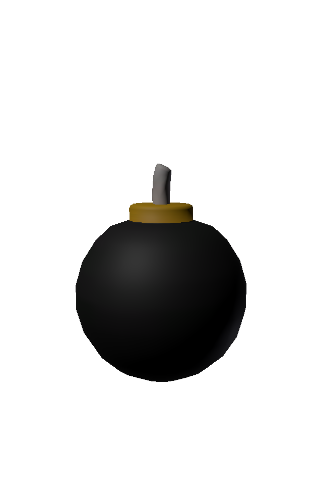
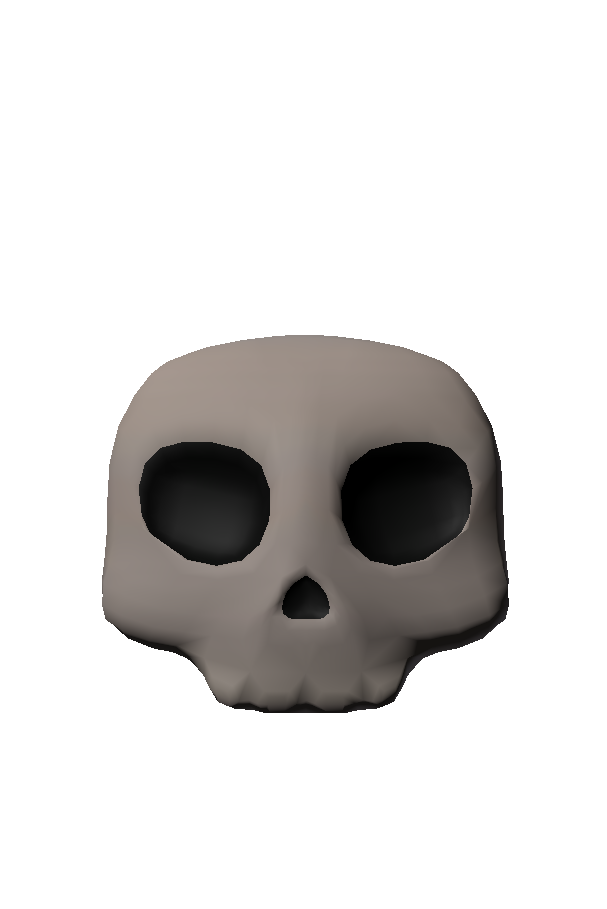
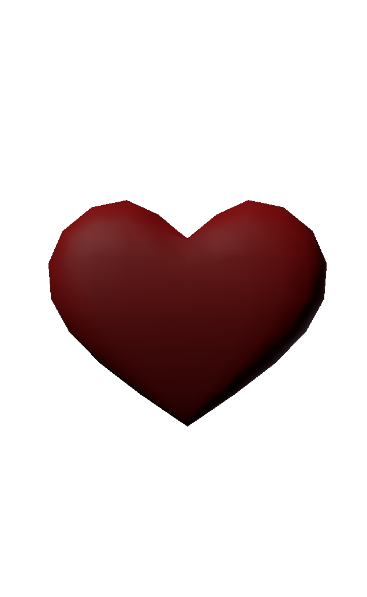
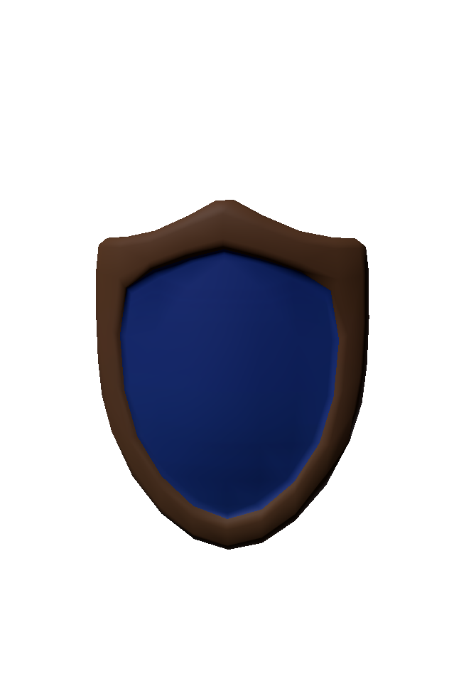
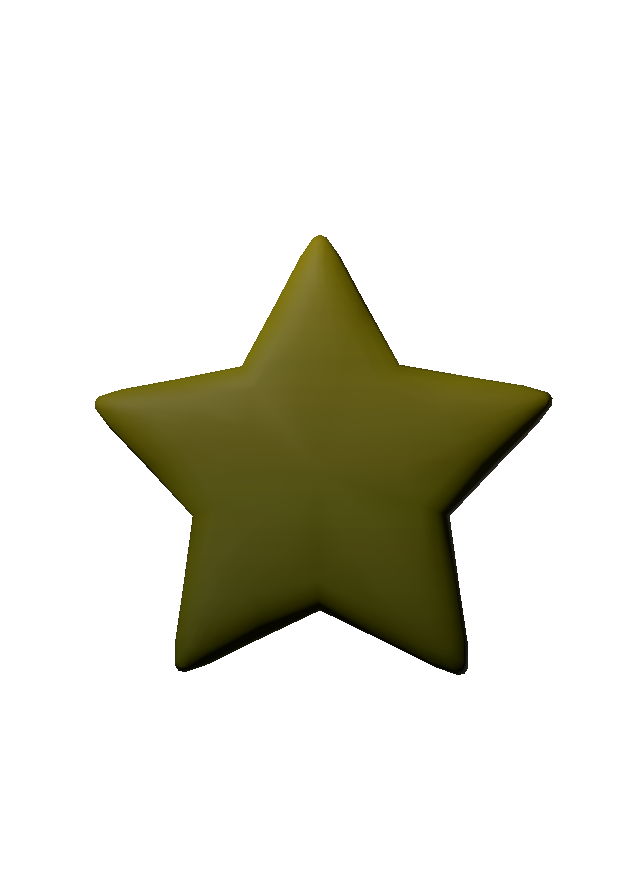
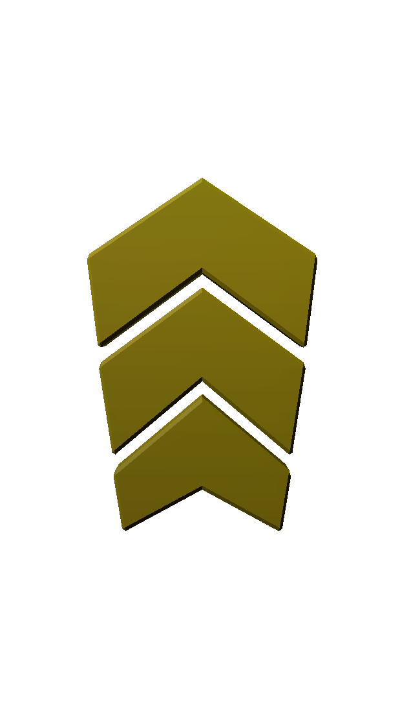
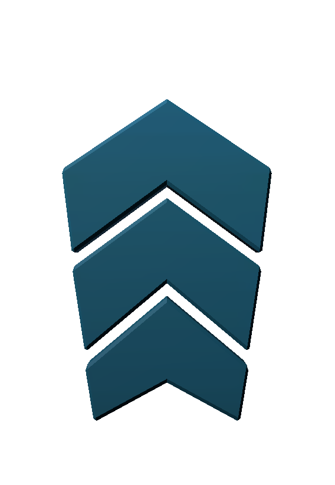
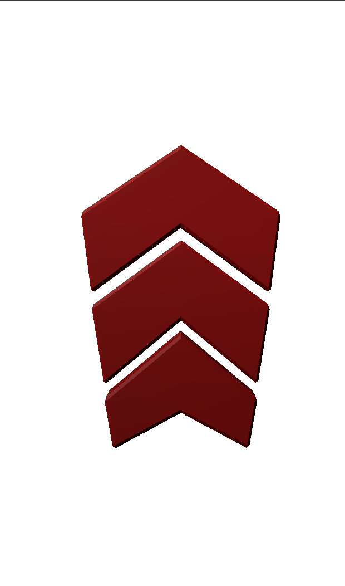
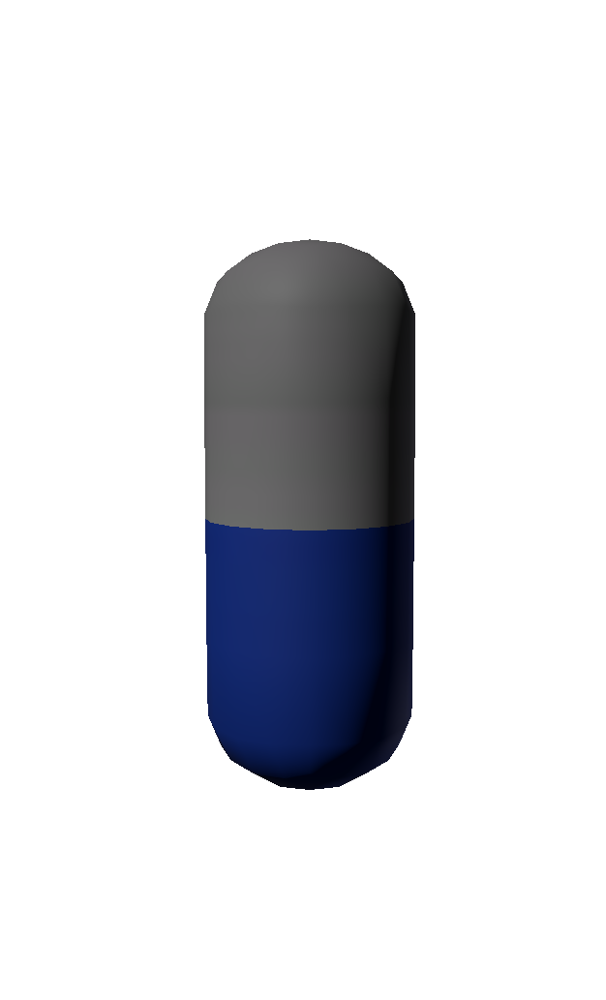
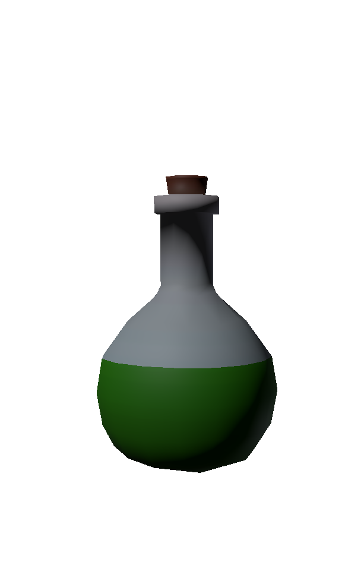
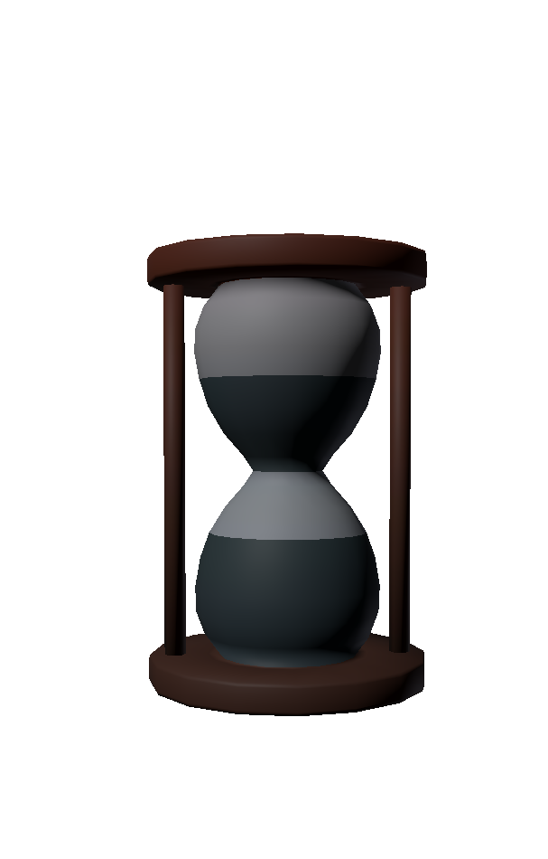
RANKING DE PUNTUACIONES!
| Posición | Puntuación | Jugador |
|---|